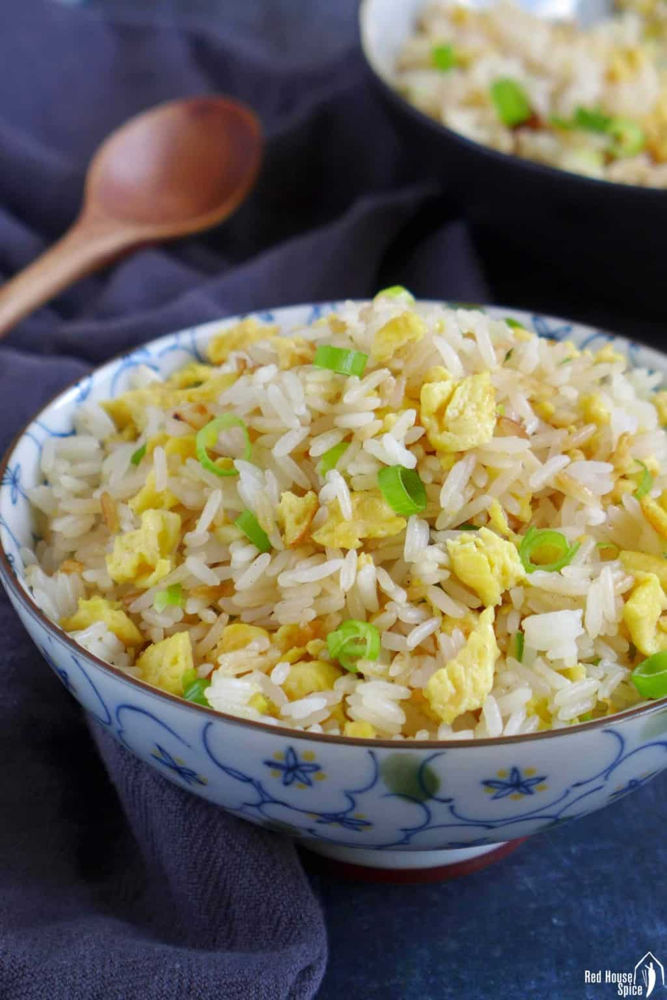

Fried Rice Recipe

Description
One of my comfort foods, fried rice is an easy stir fry dish that anyone can make.
Try this recipe and you will have your fried rice cooked in less than 10 minutes!
Ingredients
- White rice, cooked and chilled
- Eggs, lightly beaten
- Scallions & garlic, finely chopped
- Light soy sauce
- Sesame oil
- Salt & white pepper
- Neutral cooking oil (olive oil isn’t suitable)
Steps
- Scramble the eggs
- Remove the gg and fry the minced garlic
- Stir in the rice, flipping and tossing constantly
- Once the rice is hot, put in the scrmabled egg and scallions
- Add soy sauce, sesame oil, salt and white pepper